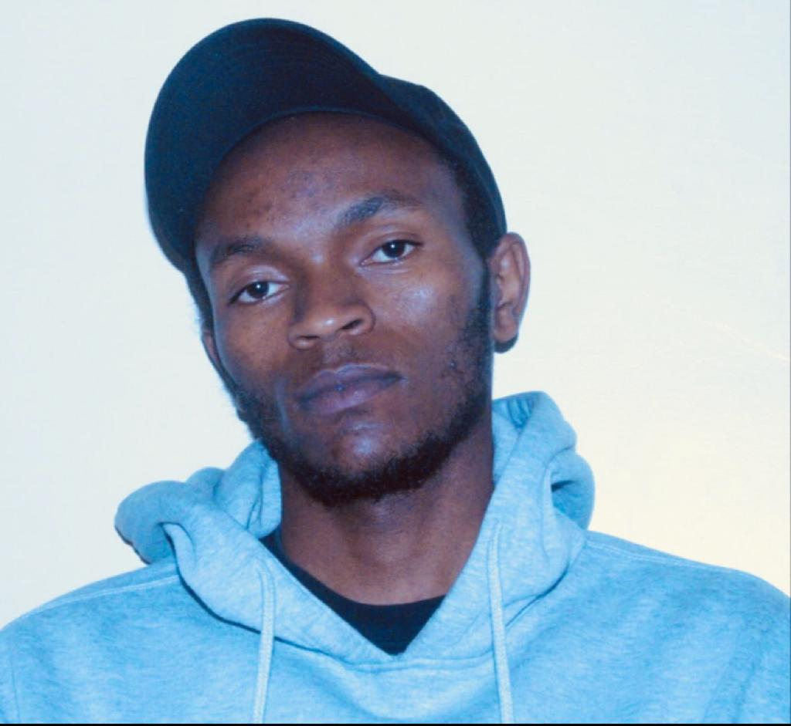

Biography
Below are their short description of their lives and how they met.
ANNET NJERI
FOUNDER
Grace Chatto (born 10 December 1985) is an English musician and singer who is the cellist for the electronic music band Clean Bandit. Chatto attended Latymer School and Westminster School, as well as the Royal Academy of Music. She studied Modern Languages at Jesus College, Cambridge where she met founding band members Jack Patterson and Neil Amin-Smith, with whom she played in a string quartet. Chatto speaks Russian fluently. Chatto and Jack Patterson formed their own film production company, Cleanfilm, to make music videos for themselves and other artists. Chatto has produced and directed videos with Jack Patterson since the band's inception.

DICKSON NDUNGU
DESIGNER
Luke Patterson is a musician and member of the British electronic group Clean Bandit who performs alongside his brother Jack Patterson and Grace Chatto. His brother Jack is the bassist and keyboardist for Clean Bandit. He was the only member of the group to not be a part of the original formation as his three bandmates all met while studying at Jesus College, University of Cambridge.He won a Grammy as a member of Clean Bandit in 2015 for Best Dance Recording for the single "Rather Be," featuring singer Jess Glynne.
CAROLINE KWAMBOKA
OPERATIONS MANAGER
Jack Patterson is a bass guitar, keyboard and piano player for the Grammy Award-winning band Clean Bandit and performs alongside his younger brother Luke Patterson and Grace Chatto. He and the rest of the group, except for his brother Luke, met while studying at Jesus College, University of Cambridge. He and Clean Bandit released their debut studio album New Eyes in May of 2014 with the album peaking at #3 on the UK albums chart.

ANDREW OKITOI
PRODUCTION MANAGER
Jack Patterson is a bass guitar, keyboard and piano player for the Grammy Award-winning band Clean Bandit and performs alongside his younger brother Luke Patterson and Grace Chatto. He and the rest of the group, except for his brother Luke, met while studying at Jesus College, University of Cambridge. He and Clean Bandit released their debut studio album New Eyes in May of 2014 with the album peaking at #3 on the UK albums chart.